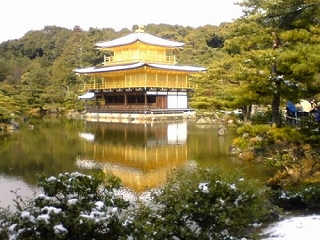

鹿苑寺（ろくおんじ）は，京都市北区にある臨済宗相国寺派の寺。 建物の内外に金箔を貼った3層の楼閣建築である舎利殿は金閣（きんかく）， 舎利殿を含めた寺院全体は金閣寺（きんかくじ）として知られる。 相国寺の山外塔頭寺院である。
(出典: ウィキペディア )
清水寺（きよみずでら）は，京都府京都市東山区清水にある寺院。 山号を音羽山。本尊は千手観音，開基（創立者）は延鎮である。 もとは法相宗に属したが，現在は独立して北法相宗大本山を名乗る。 西国三十三所観音霊場の第16番札所である。